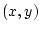
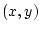

Sensing devices are used to gather data about activities in the environment.
Common sensing devices include cameras, accelerometers, microphones, laser
range finders, and motion capture devices. These sensors typically return raw
data measurements of the observable environment. This raw data can be used
directly for recognition or processed to extract the significant features as
deemed appropriate for the task. This data is stored as numerical vectors,
known as feature vectors, and form the data set over which GT k
operates.
The range of values and the length of the vector is dependent on the
application. A typical gesture example would appear as a sequence of these
feature vectors. For instance, video-tracked gestures may return the position
of the hand at each video frame as an  coordinate. This results in a
feature vector of length two with two real values corresponding to
position. A gesture which completes in 29 frames would be
represented with 29 feature vectors.
k
operates.
The range of values and the length of the vector is dependent on the
application. A typical gesture example would appear as a sequence of these
feature vectors. For instance, video-tracked gestures may return the position
of the hand at each video frame as an  coordinate. This results in a
feature vector of length two with two real values corresponding to
position. A gesture which completes in 29 frames would be
represented with 29 feature vectors.
In order for GT k to properly understand the data it receives, the
data must be annotated by the user. This requires the user to specify
which gestures appear in each of the training examples.
k to properly understand the data it receives, the
data must be annotated by the user. This requires the user to specify
which gestures appear in each of the training examples.